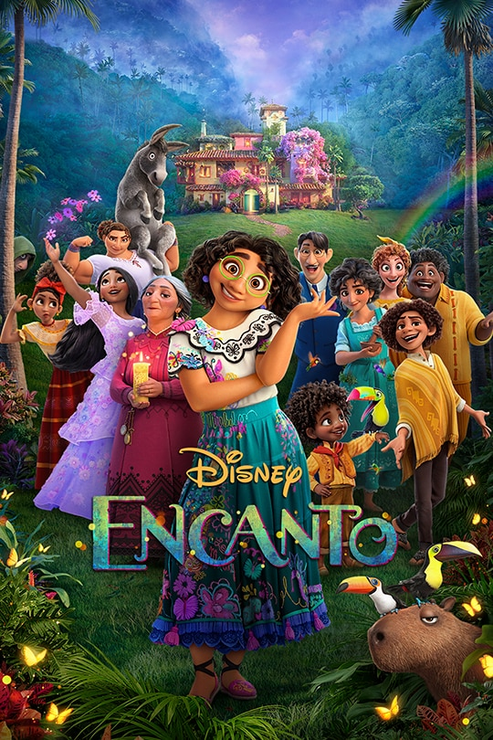

Hello! This is my first ever website built with html and css. My name is Matthew Tran and I am currently a student at the University of Massachusetts - Lowell, living in North Chelmsford. I am from the city of Chico, California and came up to Massachusetts for college, where most of my family is from. I am currently studying for a bachelor's degree in computer science and I am about to be in my senior year. Below are some links to my Resume and Linkedin, respectively.
Another hobby of mine is collecting nfts. If you click the red button to the right of my photo it would bring up a picture of my favorite online identity. The left button would bring back a picture of me! Collecting NFT's started out as an investment opportunity for me and now I've been inspired by their decentralized ideas which has led me to taking this class.
Another hobby of mine is fishing. Fishing is something I got into 4 years ago while in California when I would go up in the mountains to fish for trout in the local streams and rivers. Today I mainly fish for bass in the local lakes and ponds around massachusetts.
The picure on the left was taken in Deerk Creek, California with me holding a pike minnow. The picture on the right is of my largest bass to date caught at Silver Lake in Tewksbury.
Another hobby of mine is skateboarding. I have been skateboarding on and off since highschool ever since I was introducted to it by my friend Riley in sophomore year. The video below is a video of me performing a kickflip in flip flops.
Along with fishing and skateboarding, I also enjoy watching movies in my free time. Below are some of the most recent movies that I have watched along with my personal ratings along with them.
| Name | Rating | Story | Message/impact | Directing | Expected Rating |
|---|---|---|---|---|---|
| Spiderman: No Way Home | 7.8 | 8 | 5 | 7 | 9 |
| Everything Everywhere All At Once | 10 | 9.5 | 10 | 9 | 7 |
| Encanto | 7 | 5 | 8 | N/A | 10 |
| The Adam Project | 8.5 | 9 | 9 | 8 | 6 |
These ratings for the movies are completely personal and just from my own opinion. Spiderman: No Way home was a great movie for what it is, but was not that amazing outside of that superhero genre. Everything Everywhere All At Once was like a dark horse who came out of nowhere and blew my expectations out of the water with its amazing cinetography, story and performance by the actors. Disney's Encanto was a great movie as well although I expected more story out of it and it felt sort of rushed. The Adam Project was recommended to me by my father and my computer architecture teacher, although I had low expectations as it was a Netflix film and recommended by my Father who watches documentaries all day. The Adam Project was entertaining to watch and was a good laugh with a story that was all over the place in a good way.
Contact me:
Phone: 530-518-0733
Email: Matthewtran2468@yahoo.com